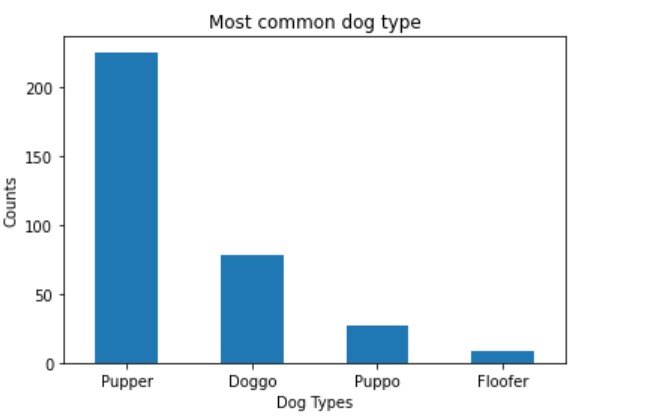
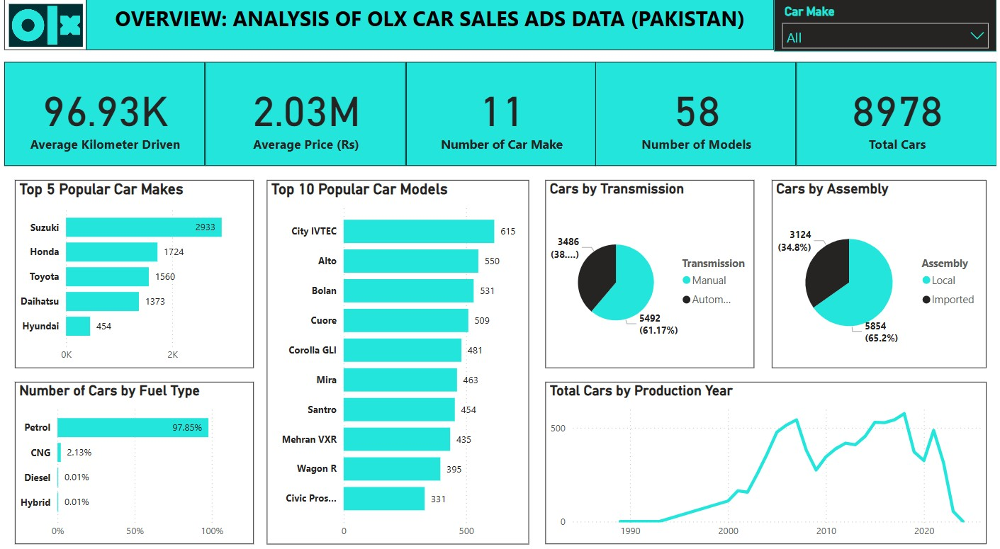

The project uses python to visualize the global coronavirus datasets from CSSEGIS John Hopskin University and also to tell a story of the coronavirus pandemic using some metrics like confirmed rates, fatality rates, prevalence and recovery rates.

This project involves the analysis of TMDb Movie data to detect patterns in the collection of movies and genres, and identify relationships among variables in the dataset. TMDb Movie Data contains information about 10,000 movie titles from The Movie Database.
This data shows information and details regarding movie titles released from 1960 to 2015.

This project involves wrangling and analyzing datasets from WeRateDogs Twitter profile. This involves gathering three datasets (via manual download, programmatic download and twitter API), assessing the datasets for quality and tidiness issues and cleaning the datasets to remove the issues identified. Then, storing the datasets as a cleaned master data frame, analysed to discover insights and then visualize the insights.

Dashboard Projects.
Dashboards developed (using Excel, Power BI and Tableau) to visualize key insights gotten from datasets.